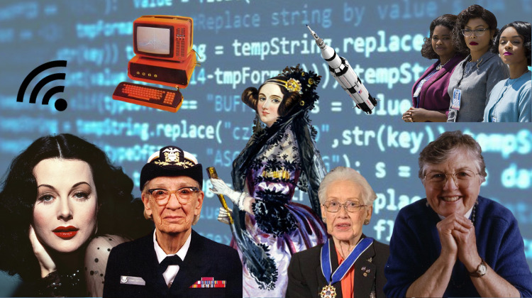
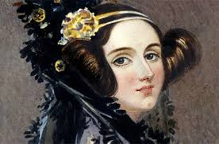
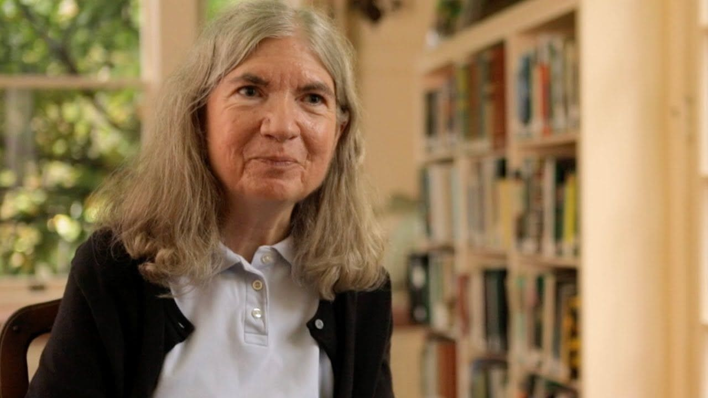
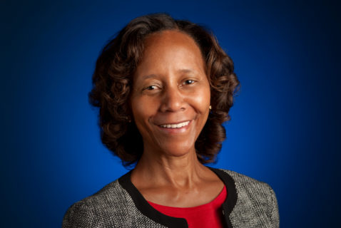

Honrando as mulheres pioneiras da tecnologia
É fundamental conhecer as pioneiras da tecnologia.
Ao destacar a importância dessas mulheres pioneiras,
podemos inspirar as próximas gerações a seguir seus passos e a não terem medo de perseguir seus sonhos.
É importante reconhecer que, apesar dos desafios que essas mulheres enfrentaram no passado,
elas perseveraram e realizaram grandes feitos. Essas mulheres abriram caminho para que as mulheres hoje possam ser engenheiras,
programadoras, cientistas da computação e líderes em tecnologia e para a promoção da igualdade de gênero.
Vamos falar sobre uma das melhores da baixada fluminense, Ana Carolina Neves
mas antes iremos apresentar algumas pioneiras.
Ada Lovelace

Foi uma matemática britânica do século XIX que é amplamente reconhecida
como a primeira programadora de computador da história, trabalhou com o matemático Charles Babbage
em sua máquina analítica e criou o primeiro algoritmo destinado a ser processado por uma máquina.
Carol Shaw

É uma desenvolvedora de jogos americana que se tornou uma das primeiras
mulheres a trabalhar na indústria de jogos eletrônicos. Ela é conhecida por seus jogos clássicos como
"River Raid" e "3D Tic Tac Toe".
Marian Croack

Marian Croak é uma engenheira americana que trabalha na Google como Vice-Presidente
de Engenharia. Ela é conhecida por seu trabalho em tecnologia VoIP e por suas contribuições para a indústria de tecnologia.
Croak é uma figura importante na indústria e recebeu vários prêmios e honras ao longo de sua carreira.
Ela também é uma defensora da diversidade e inclusão na indústria de tecnologia,
incentivando mais mulheres e minorias a seguirem carreiras em STEM.
Grace Hopper

É uma designer de jogos americana que co-fundou a Sierra On-Line,
uma das primeiras empresas de jogos de computador. Williams é conhecida por seus jogos de aventura,
como "King's Quest" e "Phantasmagoria".
Hedy Lamarr
/i.s3.glbimg.com/v1/AUTH_08fbf48bc0524877943fe86e43087e7a/internal_photos/bs/2022/Y/V/M9VQ0ORLqt0Ab4BHp5QQ/mv5bmdhinde3ywmtzmnmyi00zjcyltk4ymutmgy0odizodzjoddhxkeyxkfqcgdeqxvyntc5otmwotq-.-v1-.jpg)
Foi uma atriz e inventora austríaca-americana que desenvolveu uma
técnica de codificação de sinais que mais tarde foi usada para desenvolver tecnologia de
comunicação sem fio, como o Wi-Fi e o Bluetooth.
Katherine Johnson

Foi uma matemática americana que trabalhou para a NASA e contribuiu significativamente
para o programa espacial americano. Ela é conhecida por suas contribuições para a navegação por computador e por ajudar
a calcular a trajetória de voo da missão Apollo 11 à Lua em 1969.